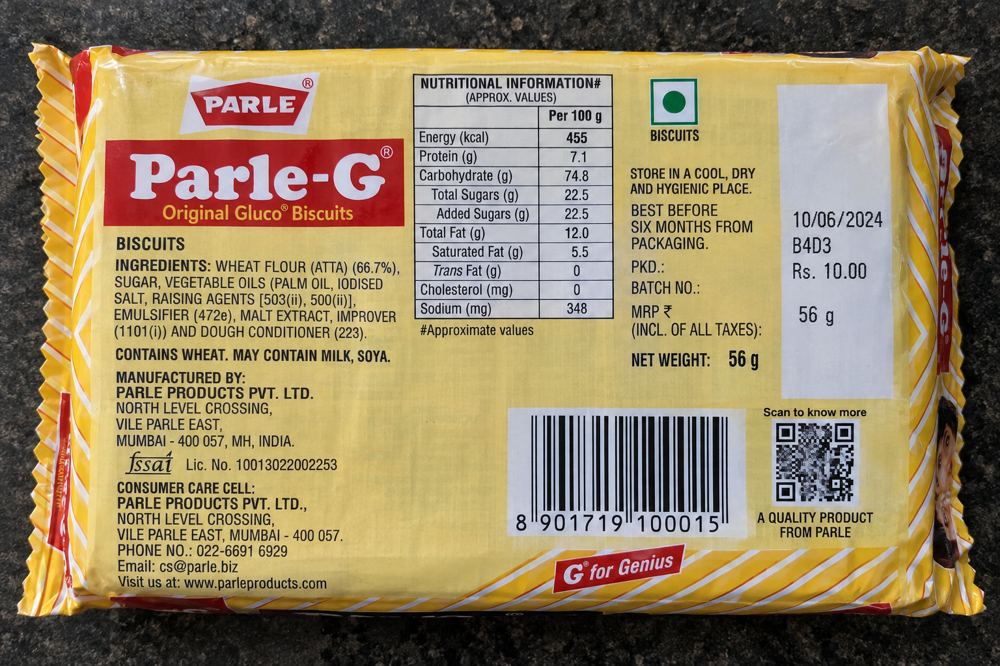

Legal Metrology (Packaged Commodities) Rules, 2011
No sign-in. The photograph goes to the reader as it was taken; the barcode is read in the browser.
Photograph the back of the pack, where the declarations are printed.

“which side of the requirement this package falls on is not established at the measurement's own precision.”
The capture is re-evaluated as a new scan against the confirmed category. The earlier verdict is kept as recorded.
It recommends. An officer confirms.